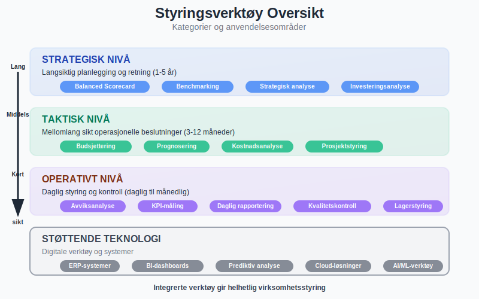
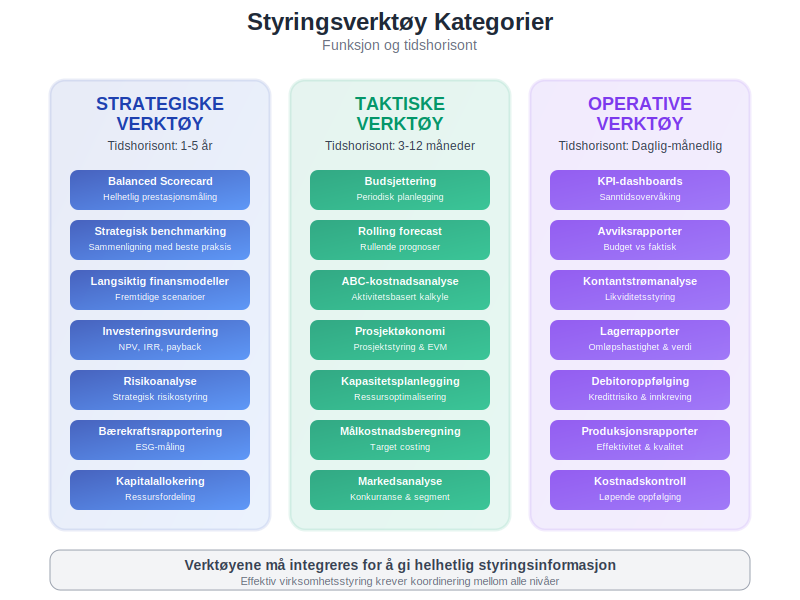
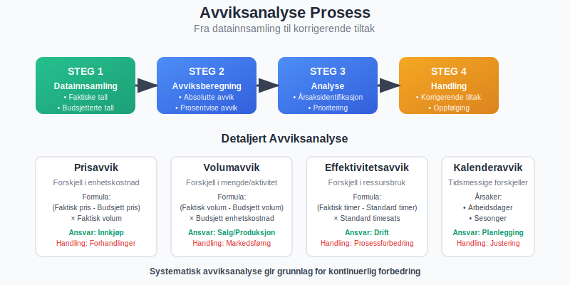
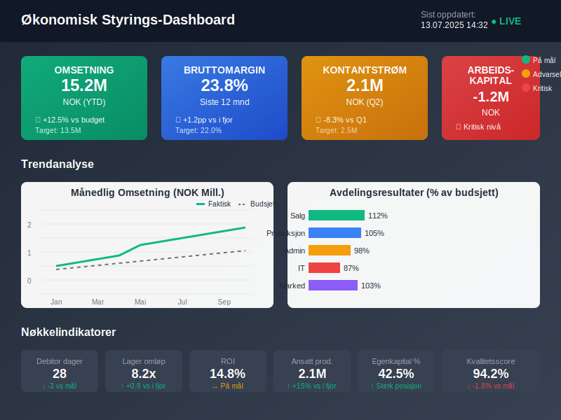
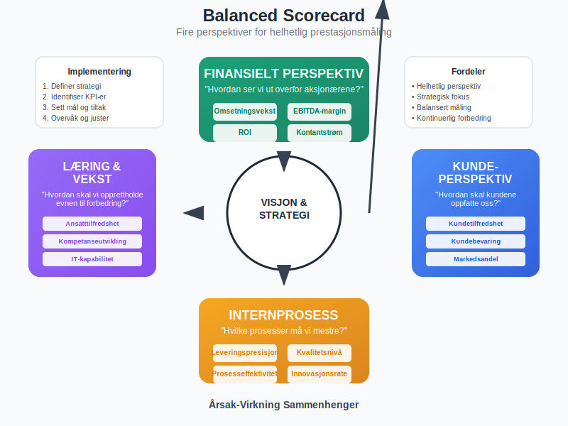
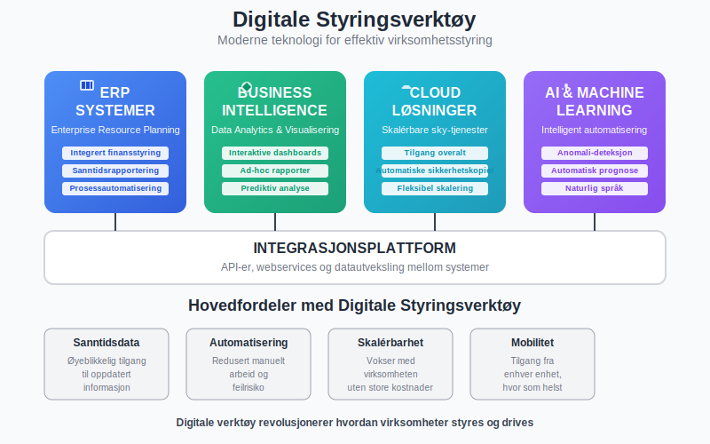
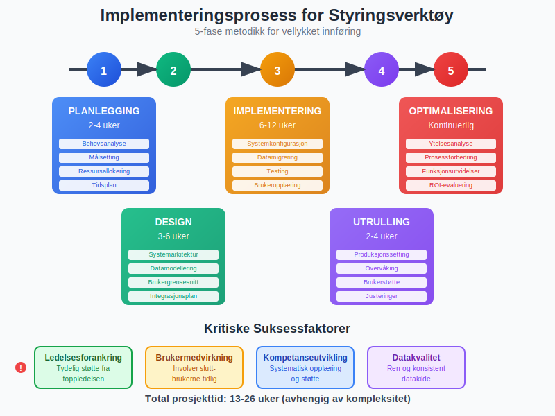
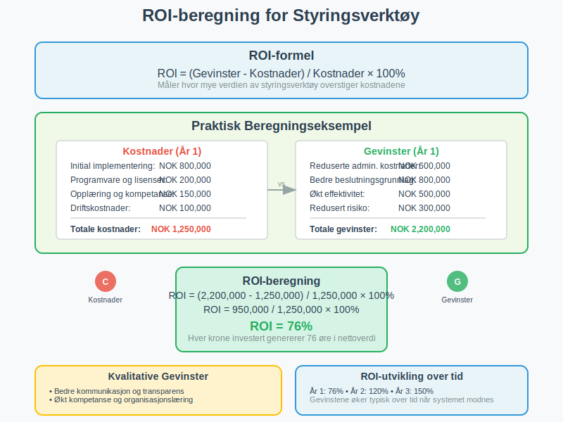
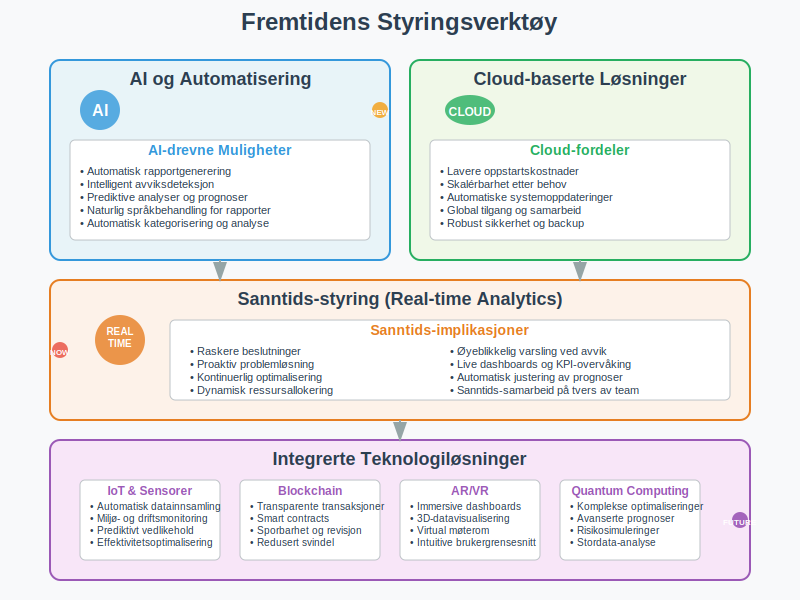
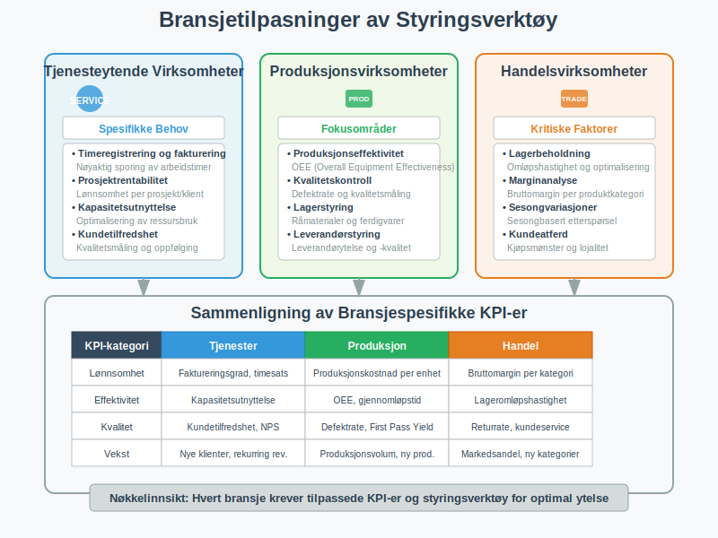

Styringsverktøy er essensielle instrumenter som hjelper ledere og eiere med å planlegge, kontrollere og evaluere virksomhetens økonomiske prestasjoner. I dagens komplekse forretningslandskap er effektive styringsverktøy avgjørende for å ta informerte beslutninger, optimalisere ressursbruk og sikre langsiktig bærekraft. Denne artikkelen gir en grundig gjennomgang av ulike styringsverktøy innen regnskap og økonomi.
Seksjon 1: Grunnleggende om Styringsverktøy
Styringsverktøy i regnskapssammenheng refererer til systematiske metoder og teknikker som brukes til å samle, analysere og presentere finansiell informasjon for beslutningsformål. Disse verktøyene støtter ledelsen i alle aspekter av virksomhetsstyring, fra daglig drift til strategisk planlegging.

1.1 Formål med Styringsverktøy
Hovedformålene med styringsverktøy inkluderer:
- Planlegging: Utvikle realistiske budsjetter og prognoser
- Kontroll: Overvåke faktiske resultater mot planlagte mål
- Evaluering: Vurdere prestasjoner og identifisere forbedringsområder
- Beslutningstaking: Tilby relevante data for strategiske og operative beslutninger
1.2 Kategorier av Styringsverktøy
Styringsverktøy kan kategoriseres basert på deres funksjon og tidshorisont:
- Strategiske verktøy: Langsiktig planlegging og retning
- Taktiske verktøy: Mellomlang sikt operasjonelle beslutninger
- Operative verktøy: Daglig styring og kontroll

Seksjon 2: Finansielle Styringsverktøy
2.1 Budsjett og Prognoser
Budsjettering er et av de mest grunnleggende styringsverktøyene. Det innebærer å lage detaljerte planer for fremtidige inntekter og utgifter.
Typer budsjetter:
- Hovedbudsjett: Omfattende plan for hele virksomheten
- Delbudsjetter: Spesifikke områder som salg, produksjon, administrasjon
- Rullende budsjetter: Kontinuerlig oppdaterte planer
- Nullbasert budsjett: Bygges opp fra bunnen hver periode
Prognoseverktøy supplerer budsjetter ved å gi oppdaterte estimater basert på faktiske resultater og markedsendringer.
2.2 Avviksanalyse
Avviksanalyse sammenligner faktiske resultater med budsjetterte tall for å identifisere områder som krever oppmerksomhet:
| Avvikstype | Beskrivelse | Handlingsområde |
|---|---|---|
| Prisavvik | Forskjell i kostnad per enhet | Innkjøp og forhandlinger |
| Volumavvik | Forskjell i mengde/aktivitet | Produksjon og salg |
| Effektivitetsavvik | Forskjell i ressursbruk | Operasjonelle prosesser |
| Kalenderavvik | Tidsmessige forskjeller | Planlegging og timing |

2.3 Nøkkeltall og KPI-er
Key Performance Indicators (KPI-er) er målbare verdier som viser hvor effektivt virksomheten oppnår sine mål:
Lønnsomhetsindikatorer:
- Bruttomarginer
- Overskudd per ansatt
- Avkastning på investert kapital (ROIC)
Likviditetsindikatorer:
- Arbeidskapital
- Kontantstrøm fra drift
- Betalingsevne-ratio
Effektivitetsindikatorer:
- Omløpshastighet for lagerbeholdning
- Debitorenes gjennomsnittlige betalingstid
- Kapitalproduktivitet

Seksjon 3: Operasjonelle Styringsverktøy
3.1 Kostnadsanalyse og Kalkulasjonsmodeller
Kostnadsanalyse hjelper virksomheter å forstå kostnadsdrivere og optimalisere ressursbruk:
ABC-kalkulation (Activity-Based Costing):
- Fordeler kostnader basert på aktiviteter
- Gir mer nøyaktig produktkostnad
- Identifiserer kostnadsbesparende muligheter
Dekningsbidragsanalyse:
- Fokuserer på variable kostnader
- Hjelper med prissetting og produktmiks-beslutninger
- Støtter kortsiktige beslutninger
3.2 Balansert Målstyring (Balanced Scorecard)
Balanced Scorecard er et strategisk styringsverktøy som evaluerer prestasjoner fra fire perspektiver:
- Finansielt perspektiv: Tradisjonelle finansielle mål
- Kundeperspektiv: Kundetilfredshet og markedsandel
- Internprosess-perspektiv: Operasjonell effektivitet
- Læring og vekst-perspektiv: Kompetanseutvikling og innovasjon

3.3 Benchmarking
Benchmarking sammenligner virksomhetens prestasjoner med bransjestandarder eller beste praksis:
Typer benchmarking:
- Intern benchmarking: Sammenligning mellom avdelinger
- Konkurranse-benchmarking: Sammenligning med konkurrenter
- Funksjonell benchmarking: Sammenligning av prosesser på tvers av bransjer
- Strategisk benchmarking: Sammenligning av strategier og forretningsmodeller
Seksjon 4: Moderne Digitale Styringsverktøy
4.1 Business Intelligence (BI) Systemer
BI-systemer samler data fra ulike kilder og presenterer dem i brukervennlige dashboards:
Fordeler med BI:
- Sanntidsrapportering
- Automatiserte analyser
- Visuell datarepresentasjon
- Bedre beslutningsgrunnlag
4.2 ERP-systemer
Enterprise Resource Planning (ERP) integrerer alle forretningsprosesser i ett system:
ERP-moduler relevante for styring:
- Finansiell rapportering
- Budsjettplanlegging
- Prosjektstyring
- Lagerstyring

4.3 Prediktiv Analyse
Prediktiv analyse bruker historiske data og maskinlæring for å forutsi fremtidige resultater:
Anvendelsesområder:
- Etterspørselsprognoser
- Kredittvurderinger
- Risikohåndtering
- Kapasitetsplanlegging
Seksjon 5: Implementering av Styringsverktøy
5.1 Planlegging og Forberedelse
Suksessfaktorer for implementering:
- Tydelige mål: Definer hva som skal oppnås
- Ledelsesforankring: Sikre støtte fra toppledelsen
- Brukermedvirkning: Involver de som skal bruke verktøyene
- Kompetanseutvikling: Tren ansatte i bruk av nye systemer
5.2 Kritiske Suksessfaktorer
Faktorer som påvirker suksess:
| Faktor | Betydning | Handlingsområde |
|---|---|---|
| Datakvalitet | Høy | Standardisering og validering |
| Brukeradopsjon | Høy | Opplæring og støtte |
| Systemintegrasjon | Medium | Teknisk planlegging |
| Kostnads-nytte | Høy | ROI-analyse og oppfølging |

5.3 Utfordringer og Fallgruver
Vanlige utfordringer:
- Datasiloer: Informasjon som ikke deles mellom systemer
- Motstand mot endring: Ansatte som ikke ønsker nye arbeidsmetoder
- Tekniske problemer: Systemfeil og integrasjonsproblemer
- Mangelfull opplæring: Utilstrekkelig kunnskap om verktøyene
Seksjon 6: Måling av Effektivitet
6.1 ROI av Styringsverktøy
Return on Investment (ROI) måler hvor mye verdien av styringsverktøy overstiger kostnadene:
Beregning: ROI = (Gevinster - Kostnader) / Kostnader × 100%
Gevinster kan inkludere:
- Reduserte administrative kostnader
- Bedre beslutningsgrunnlag
- Økt effektivitet
- Redusert risiko
6.2 Kvalitative Gevinster
Ikke-monetære fordeler:
- Bedre kommunikasjon
- Økt gjennomsiktighet
- Forbedret kompetanse
- Sterkere organisasjonskultur

Seksjon 7: Fremtidige Trender
7.1 Kunstig Intelligens og Automatisering
AI-drevne styringsverktøy vil revolusjonere hvordan virksomheter styres:
Muligheter:
- Automatisk rapportgenerering
- Intelligent avviksdeteksjon
- Prediktive analyser
- Naturlig språkbehandling for rapporter
7.2 Cloud-baserte Løsninger
Sky-teknologi gjør avanserte styringsverktøy tilgjengelige for mindre virksomheter:
Fordeler:
- Lavere oppstartskostnader
- Skalérbarhet
- Automatiske oppdateringer
- Tilgang fra hvor som helst
7.3 Sanntids-styring
Real-time analytics gir øyeblikkelig innsikt i virksomhetens prestasjoner:
Implikasjoner:
- Raskere beslutninger
- Proaktiv problemløsning
- Kontinuerlig optimalisering
- Dynamisk ressursallokering

Seksjon 8: Bransjetilpasninger
8.1 Tjenesteytende Virksomheter
Spesifikke behov:
- Timeregistrering og fakturering
- Prosjektrentabilitet
- Kapasitetsutnyttelse
- Kundetilfredshet
8.2 Produksjonsvirksomheter
Fokusområder:
- Produksjonseffektivitet
- Kvalitetskontroll
- Lagerstyring
- Leverandørstyring
8.3 Handelsvirksomheter
Kritiske faktorer:
- Lagerbeholdning og omløpshastighet
- Marginanalyse
- Sesongvariasjoner
- Kundeatferd

Konklusjon
Styringsverktøy er uunnværlige for moderne virksomhetsledelse. De gir den nødvendige innsikten og kontrollen som kreves for å navigere i et komplekst og konkurransedyktig marked. Ved å velge riktige verktøy og implementere dem effektivt, kan virksomheter oppnå bedre prestasjoner, redusert risiko og økt konkurranseevne.
Suksess med styringsverktøy krever en helhetlig tilnærming som kombinerer teknologi, prosesser og mennesker. Det er viktig å huske at verktøyene i seg selv ikke skaper verdi – det er hvordan de brukes og integreres i virksomhetens beslutningsprosesser som avgjør deres effektivitet.
I fremtiden vil styringsverktøy bli enda mer sofistikerte og tilgjengelige, med kunstig intelligens og automatisering som driver innovasjon. Virksomheter som investerer i moderne styringsverktøy og bygger kompetanse rundt deres bruk, vil være best posisjonert for fremtidig suksess.